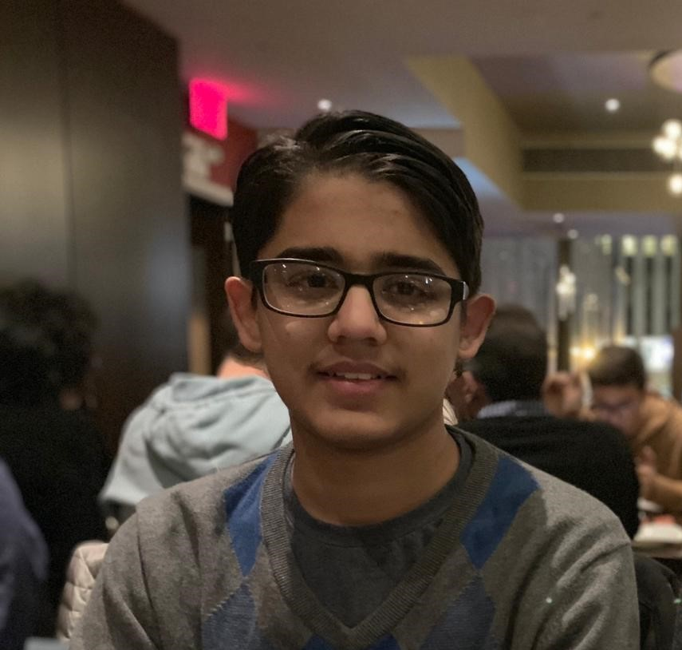

Avyuk Dixit
TJHSST '20
2020adixit@tjhsst.edu

TJHSST '20
2020adixit@tjhsst.edu

I am a junior at Thomas Jefferson High School for Science and Technlogy, in Alexandria, VA, and have a strong interest in computer science, specifically computer vision and machine learning, and critical philosophy.
Glaucoma Progression - Have conducted multiple years of research related to diagnosing glaucoma by looking at fundus images using machine learning. Worked with Dr. David Friedman of the Wilmer Eye Institute at Johns Hopkins. Currently working on a project that utilizes Recurrent Neural Networks trained on Optical Coherence Tomography and Visual Field Data to determine the progression of glaucoma in patients over time.
Glaucoma Detection - Travelled to Pondicherry, India through Johns Hopkins to help integrate my machine learning model for detection at Aravind Eye Hospital – the largest eye care provider in the world – under Dr. R Venkatesh, Chief Medical Officer. Specifically, the model will be used to aid in the quick and affordable diagnosis of glaucoma at eye camps and vision centers in rural areas. The project could soon have an estimated reach in the tens of thousands of people. Technically, the model utilizes techniques including masking, dimensionality reduction algorithms, and Gabor filters, and a Support Vector Machine trained on preprocessed fundus images.
Violence Detection - Researching and creating a framework that aids teachers in detecting violent situations and bullying within schools using machine learning and computer vision techniques to analyze surveillance camera feeds. Submitted this project to school science fair and won first place in our category at regionals.
Hackathons - I've attended multiple hackathons over the course of 2 years, including HackTJ, a high school hackathon hosted by my school that attracts high schoolers from across the nation, HackUVA, and HackUMBC. In these hackathons, my teams have won multiple prizes, including best overall novice hack, BigParser Top 10 Grand Prize Winner, Palantir Social Work Award, and the Fannie Mae Blockchain Prize.
Patents - I have been a part of writing two patents thus far. My first patent, Linkpedia, was provisional and sought to create a database of links or analyses between existing content all over the internet via crowdsourcing, the process by which millions of experts work together to improve products or processes. I contributed in a second, non-provisional patent, info360, a classification system that allows for the swift discovery of data and helps businesses and individuals understand and unlock data for decision making. I am also working on but have not yet submitted a third provisional, patent related to my specific process in using machine learning to aid in glaucoma diagnosis.
Machine Learning Club - Since freshman year, I have participated in my school's machine learning club. Now, I regularly lecture and lead discussions in the club, participate in Kaggle competitions, and hope to hold an officer position next year.
Community Work - I've worked with a local non-profit, Magic of Mothers, since Middle School. I help in creating teaching curriculum and coaching for Lego Robotics and First Lego League classes, showcasing and helping organize free STEM workshops at local schools, and writing math and science tests for competitions hosted by the organization. Outside of this, I believe it is important to utilize machine learning to help make processes in my local community more efficient. Thus, I am working on a project with the Mount Vernon Estate to determine the impact of weather on tourism, so that they can better understand how to attract more visitors. Further, I've embarked on project with a team to create a comprehensive machine learning model that can detect violent behavior (individual instances of fighting) from surveillance feed, and we are planning to test our model soon on cameras at our school.
Robotics / Electronics - I spent some time working on the electronics division of a team that is launching a satellite to space at my school, TJ CubeSat. Some projects I worked on were finding the most efficient placement of solar panels on the satellite to maximize electricity capture and satellite altitude control via electromagnets. Freshman year, I participated in an underwater robotics club at my school and was the lead programmer. We created our entire robot from scratch, using an Arduino to control it and implementing the proportional–integral–derivative (PID) algorithm to ensure that our robot would "swim" straight and creating a novel java interface to communicate over the serial port, taking input from a joystick. Though we only placed 5th at the competition itself, our attempt at creating the robot entirely on our own was novel and hadn't been done before.
Lincoln Douglas Debate – Over the past 3 years, I've participated in Lincoln Douglas Debate and won awards in the Varsity and Junior Varsity divisions at prestigious tournaments at Harvard, Princeton, Yale, and UPenn and at local tournaments. Specifically, I placed in the top 32 among over 300 competitors at Harvard, in the top 8 among about 100 competitors at Princeton, and in the top 16 among over 150 competitors at Yale and UPenn. I've placed in the top 6 and occasionally first at almost every local tournament I have attended. Currently, I serve as my team's Research Coordinator, responsible for compiling and coordinating preparation before tournaments. Debate has helped me in being able to articulate myself clearly to others. When researching complex concepts such as machine learning, I find myself good at explaining especially tough ideas to others, which can motivate them as well. Further, debate has also allowed me to see different perspectives to every issue, discovering how things that may seem objectively good always have a more nuanced side to them. Finally, something that has contributed greatly to my innovation and creative thinking skills has been coming up with arguments on the spot in debate. Being time-crunched with only 4 minutes of prep during rounds, I've learned to think of responses to arguments I may not have heard before quickly, something that has contributed to my brainstorming ability and allowed me to think outside the box.
Future Problem Solving – For 2 years, I've participated in the Future Problem Solving competition. Freshman year, my team qualified for the international FPS competition at the University of Wisconsin and placed 6th there in the skits category. In having to come up with novel skit ideas, I learned to really exercise my creativity – our 6th place skit was a re-interpretation of Romeo and Juliet to describe the effect of invasive species on biosecurity. A key aspect of FPS is its focus on finding the ethical, legal, financial, and environment concerns with current technological developments. As someone very passionate about computer science and its aiding society, FPS allowed me to see that there are cross cutting concerns in other fields that must be considered when taking technical projects into the real world. In being forced to seeing things from a different perspective, I’ve also learned the importance of collaboration and how it improves the quality of any work.
JA Entrepreneurship Summit – Last summer, I participated in the JA Entrepreneurship Summit, in which lots of high school students from across the DC area came together, were divided into “companies,” and had to come up with and pitch a business idea to judges over the span of a week. Our company, “Help the Homeless,” sold food made by those employed at homeless shelters. Our presentation got us second place. More importantly, I learned about the details of creating a business model, taking ideas and turning them into a tangible product, and proper presentation skills in front of a large audience. Entrepreneurial skills are something I find important in every field, as even when doing research work, it’s important to know how to sell your innovation and articulate it clearly to others. Communicating ideas is a necessary skill in taking research beyond the walls of laboratories and universities.
Cybersecurity Work - Conducted research in cybersecurity, specifically to create chrome extensions in JavaScript to better detect phishing, under Dr. Pradeep Atrey, Director of Computer Science at the State University of New York
Enterprise E Support - Interned at Enterprise E Support and helped create an enterprise and information management
tool using the Apache Tomcat, JSP, and MySQL software stack. Filed a non-provisional patent for
this technology
Computer Skills
Advanced - Python, Java, JavaScript, HTML and CSS, Excel, Android Studio, Tensorflow, JSON, XML, Electron, Node, Django.
Intermediate - C++, SQL, LaTeX, Access, Linux.
Beginner - Perl, R, MATLAB, and AutoCAD.